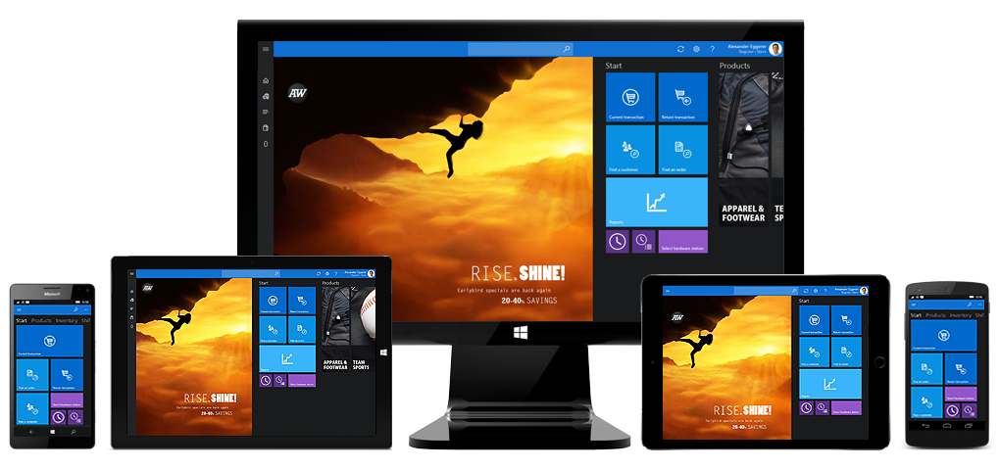
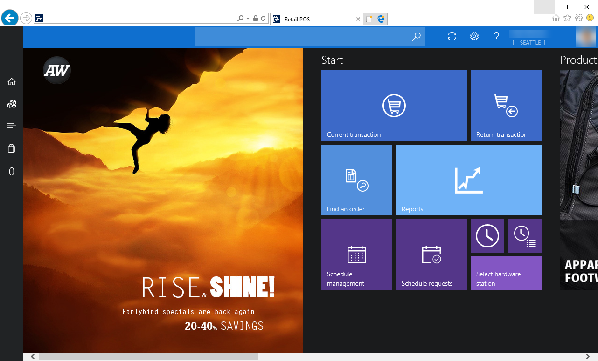
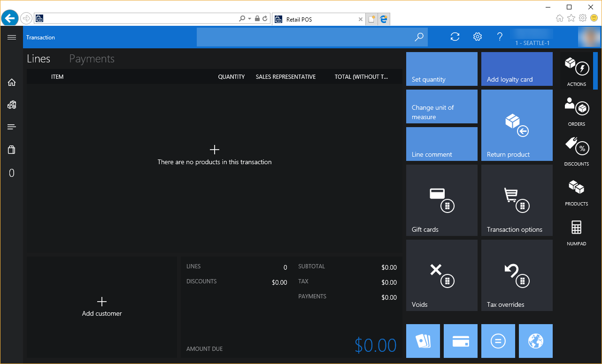

Demo data screen layouts in Modern POS (MPOS) and Cloud POS
This topic provides information about the screen layouts that are included with the demo data set for the point of sale (POS) experiences in Dynamics 365 Commerce.
Overview
The sample screen layouts that are included with Commerce demo data provide content that is optimized for various retail segments, store worker roles, and devices. A single layout can contain several layout sizes and combinations of button grids, to help ensure coverage as store workers move between devices and stations. This topic highlights the differences between these layouts, the operations that they provide, and the overall experiences that they deliver.

Anatomy of a screen layout ID
To find screen layouts, go to Retail and Commerce > Channel setup > POS setup > POS > Screen layouts.

Screen layout IDs can have a maximum of 10 characters. The ID is a string that consists of three pieces of information, in this order:
- Company
- Layout version
- Persona
Company
| Letter | Company |
|---|---|
| A | Adventure Works |
| F | Fabrikam |
| C | Contoso |
Layout version
| Version number | Description |
|---|---|
| 3 | The base version that supports multiple screen sizes for various devices and aspect ratios |
| 3.1 | The base version that has additional support for the Recommended products panel |
| 4 | The extended version for extended Fabrikam updated layout |
Persona
| Abbreviation | Persona | Contents |
|---|---|---|
| CSH | Cashier | Cashier layouts include all transaction-related operations, such as customer orders, returns, discounts, voids, and gift cards. These layouts also include daily tasks for inventory management, such price checks, inventory lookups, and stock counts. Basic shift management is also provided for start amounts, suspending shifts, and time clock. |
| MGR | Store Manager | Store Manager layouts include all transaction-related operations that are found in the Cashier layouts but also include tax overrides. These layouts also include daily tasks for inventory management, such as price checks, inventory lookups, and stock counts. Shift management is provided for starting, suspending, and closing shifts. Additionally, the layouts include drawer operations for entries, removals, tender declarations, and safe and bank drops. Finally, these layouts include access to performance reports, and enable X and Z reports to be printed. |
| STK | Stock Clerk | Stock Clerk layouts are optimized for inventory management. They include access to daily tasks for price checks, inventory lookups, picking and receiving, stock counts, and kit disassembly. These layouts also provide basic shift operations for time clock and suspending shifts. Although these layouts are intended mainly for back-office tasks, stock clerks have the same operations as cashiers for transaction screens. |
Example layout
Here is an example of a screen layout ID for the Fabrikam company, layout version 4, and the Store Manager persona:
F4MGR
The following illustration shows an example of the Welcome screen for a Fabrikam store manager.
Layout sizes
Full vs. compact layouts
A screen layout can have configurations for both full devices and compact devices. Therefore, a user can be assigned to a single screen layout that will work across various sizes and form factors in the store.
- Modern POS - Full – Typically, full layouts are best used for larger displays, such as desktop computer monitors or tablets. Users can select the UI elements that the layout includes, specify the size and placement of those elements, and configure their detailed properties. Full layouts support both portrait and landscape configurations.
- Modern POS - Compact – Typically, compact layouts are best used for phones or small tablets. Design possibilities are limited for compact devices. Users can configure the columns and fields for the receipt pane and the totals pane.
Screen resolutions that are provided
The following table shows the layout sizes that are provided for typical screen resolutions.
| Layout type | Resolution | Aspect ratio | Target display |
|---|---|---|---|
| Compact* | 480 × 853 | 16:9 | Phones |
| Full | 1024 × 768 | 4:3 | Tablets |
| Full* | 1280 × 720 | 16:9 | Tablets |
| Full | 1366 × 768 | 16:9 | Tablets, larger screens |
| Full | 1440 × 960 | 3:2 | Tablets, larger screens |
| Full* | 1536 × 864 | 16:9 | Tablets, larger screens |
* These additional layout sizes are available only in Adventure Works and Fabrikam layouts.
Tip
POS automatically selects layout sizes, based on the closest size that is available for the screen resolution of the current app window. To find the screen layout ID and layout resolution that are currently used, in Modern POS (MPOS) or Retail Cloud POS (CPOS), open the Settings page, and look in the Session information section. You can also see the actual window resolution for your current application or browser frame. After you have this information, you can find the source of the layout content by going to Channel setup > POS setup > POS > Screen layouts.

Companies and brands
Each fictitious company is targeted to a different retail segment and includes product catalogs that are tuned for the company's market. Each company has a unique visual brand that accompanies its products. Branding elements include the accent color, dark or light theme, and accompanying photographs that provide realistic experiences.
Company segment and visual characteristics
| Company | Location | Segment | Accent | Theme |
|---|---|---|---|---|
| Adventure Works | Seattle | Sporting Goods | Blue | Dark |
| Fabrikam | San Francisco | Fashion | Green | Light |
| Contoso | Boston | Electronics | Red | Dark |
Note
Adventure Works and Fabrikam are the two flagship brands. Contoso is available, but not all layouts have been provided.
The following illustrations show examples of the welcome page and transaction page for the three fictitious companies.
Adventure Works


Fabrikam


Contoso

User sign in matrix
Users have been provided for the various screen layouts. By using the following table, you should be able to access any of the screens. Just sign in by using an appropriate operator ID.
| Company | Screen layout ID | Persona | Operator IDs |
|---|---|---|---|
| Adventure Works | A3MGR | Store Manager | 000154, 000137, 000073 |
| Adventure Works | A3CSH | Cashier | 000150, 000175, 000165 |
| Adventure Works | A3STK | Stock Clerk | 000155, 000181, 000152 |
| Fabrikam | F4MGR | Store Manager | 000160, 000713 |
| Fabrikam | F3CSH | Cashier | 000161, 000113, 000114 |
| Fabrikam | F3STK | Stock Clerk | 000164, 000112, 000123 |
| Contoso | C3MGR | Store Manager | 000100, 000111 |
| Contoso | C3CSH | Cashier | 000110, 000120 |
| Contoso | Not applicable | Stock Clerk | Not applicable |
Tip
For best results, activate a register in the corresponding store location, and set the company to the company of the persona that you plan to use when you sign in. In this way, you help guarantee that the visual profile and branding images are aligned across the experience. For example, if you're interested in seeing a Fabrikam layout for a cashier, you should activate a register in the Houston store.